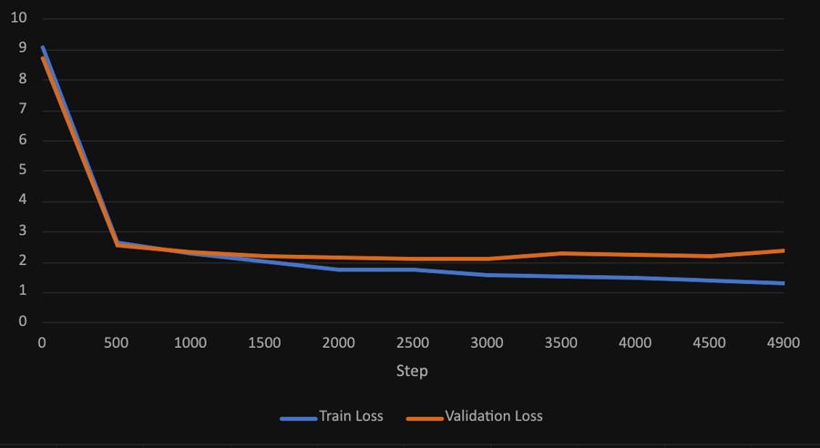
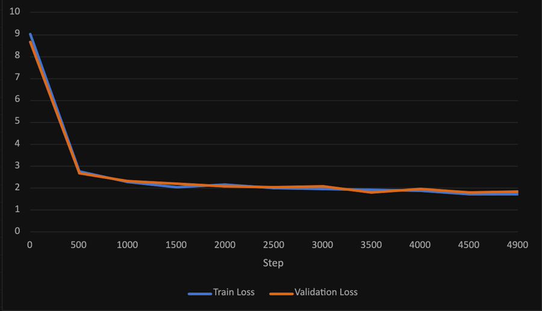

i wanted to see how much the amount of data actually matters if you keep everything else the same. so i trained lilstory 4 times on 1%, 5%, 10% and 15% of tinystories. same model, same settings, 5000 steps each.
| data | stories | train loss | val loss |
|---|---|---|---|
| 1% | 22k | 1.329 | 2.402 |
| 5% | 110k | 1.701 | 1.932 |
| 10% | 220k | 1.826 | 1.816 |
| 15% | 330k | 1.737 | 1.837 |
lower is better, and val loss is the one that matters since its on stories the model never saw.
the 1% one had the best training loss but the worst val loss, it basically just memorised its 22k stories lol. the more data i gave it the smaller that gap got, and at 10% theyre pretty much the same.


15% was slightly worse than 10% which i didnt expect. i think its because every model only got 5000 steps, so the 15% one probably never even got through all its data. the difference is tiny too so it could just be noise.
its on zenodo if you wanna read the whole thing: the effect of corpus size on the performance of a llm